Get Started Programming inPulse Smartwatch Apps
inPulse Magic 8-Ball is a tutorial for programmers who want to get started developing apps for the inPulse smartwatch and who don't have very much experience with C or any experience programming embedded devices. In this tutorial, you'll:
- Download and set up a Linux virtual machine on your computer, in which you'll develop apps and run them in an inPulse watch simulator
- Get comfortable with the development environment and inPulse programming by writing a "Hello, world!" app
- Get a little more inPulse programming practice by writing a a "Magic 8-Ball" app
What You'll Need
In order to go through this tutorial and build the inPulse Magic 8 Ball app, you'll need the following:
 A computer that can run Oracle VM VirtualBox 4.1.x. You'll develop the app and run it in the simulator, all from within a virtual Linux environment, and you'll need Oracle VM VirtualBox to run that virtual Linux environment. If you go to the Oracle VM VirtualBox downloads page, you'll see all the operating systems it runs on: Windows 32- and 64-bit, Mac OS X, Solaris 10 and a fair number of Linux distributions (Debian, Fedora, Mandriva, openSUSE, Red Hat Enterprise Linux, SUSE and Ubuntu). Ideally, your computer should have at least 8GB of RAM.
A computer that can run Oracle VM VirtualBox 4.1.x. You'll develop the app and run it in the simulator, all from within a virtual Linux environment, and you'll need Oracle VM VirtualBox to run that virtual Linux environment. If you go to the Oracle VM VirtualBox downloads page, you'll see all the operating systems it runs on: Windows 32- and 64-bit, Mac OS X, Solaris 10 and a fair number of Linux distributions (Debian, Fedora, Mandriva, openSUSE, Red Hat Enterprise Linux, SUSE and Ubuntu). Ideally, your computer should have at least 8GB of RAM.
Some programming experience and a little familiarity with the C programming language. If you've never programmed in C before, don't let the fact that the inPulse is programmed in C scare you off: C programming can be pretty straightforward, and you'll find that many of the concepts from your preferred programming language will apply. If you're familiar with a programming langauge with a similar syntax -- such as C#, Java, JavaScript, Perl or PHP -- you'll find many of the C constructs familiar. If you'd like to learn some C programming, there are many online resources, such as Zed Shaw's Learn C the Hard Way.
That's it! You won't even need an inPulse smartwatch. In this tutorial, you'll run all the apps in the simulator.
Setting Up the Development Environment
In order to develop apps for the inPulse smartwatch simulator, you'll need to do two things:
- Download and install VirtualBox, which you'll use to run the virtual machine image.
- Download and uncompress the virtual disk image, a virtual hard disk containing a complete Linux system that's already been set up with everything you need to start developing inPulse apps. This system will run in its own window as if it were another program running on your computer.
Download and Install VirtualBox
Go to the Oracle VM VirtualBox download page , look under the section marked Oracle VM VirtualBox for the link for the installer for your computer's operating system and click on it.
If You're Running Mac OS
If your operating system is Mac OS, the installer will come in a disk image (.dmg) file. Double-click the installer icon to open the disk image, which will create a virtual disk drive named VirtualBox on your desktop. The virtual disk drive should open automatically; if it doesn't, double-click it to see its contents. You should see something like this:
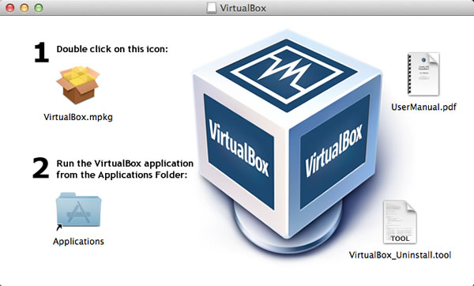
Double-click on the icon marked VirtualBox.mpkg to install Oracle VM VirtualBox. Once it's installed, open your Applications folder and double-click the VirtualBox icon to launch it.
If You're Running Windows
If your operating system is Windows, the installer will come as an executable (.exe) file. Double-click on its icon to start the installer, then launch VirtualBox from the Start menu.
If You're Running Linux
If your operating system is Linux, chances are you know what to do with the package format for your particular distribution and how to launch VirtualBox once it's installed. (I'll post a set of instructions for Ubuntu soon.)
Download and Uncompress the Virtual Disk Image
Download the compressed virtual disk image, inPulseSimulator.rar, then uncompress it. You might need to download a utility to uncompress .rar files, such as The Unarchiver for Mac OS or WinRAR or 7-Zip for Windows.
The uncompressed file will have the filename inPulseSimulator.vdi. Put it in whatever directory you use to store your development work.
Set Up the Virtual Machine
If you haven't done so already, launch VirtualBox. You should see a window that looks like this:
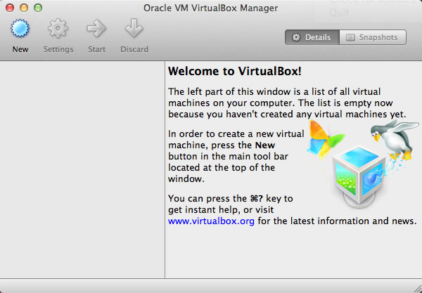
Click New. This will start the New Virtual Machine Wizard, which walks you through the steps of setting up a virtual machine:
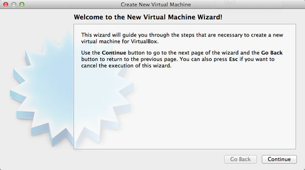
Click Continue, which takes you to the next step, where you specify what sort of operating system will run in the virtual machine:
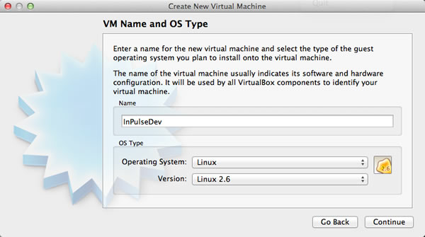
Do the following:
- Give your virtual machine a name -- I chose inPulseDev, but you can name it however you like -- and enter it into the Name field.
- For the Operating System, select Linux.
- For the Version, select Linux 2.6.
- Click Continue.
You'll be taken to the next step, where you specify the minimum amount of RAM to be allocated to the virtual machine.

On my computer, an 8GB MacBook Pro, I gave the virtual machine 4096MB (4GB) of RAM. This setting seems to work well for both the Mac OS host and Linux running in the virtual machine. You can experiment and see if you get acceptable performance from the virtual machine with less RAM.
Once you've set the amount of RAM to be allocated to the virtual machine, click Continue. You'll be taken to the next step, where you set up a virtual hard disk.
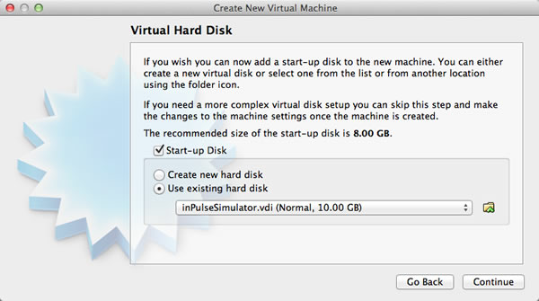
We want the virtual machine to boot from this virtual disk, so make sure that Start-up Disk is checked. The virtual disk image you downloaded earlier is the one we want to use, so:
- Select Use existing hard disk
- Click on the folder icon, use it to navigate to wherever you stored inPulseSimulator.vdi and select it.
- Click Continue.
You'll be taken to the summary page, where you can review the settings you chose:
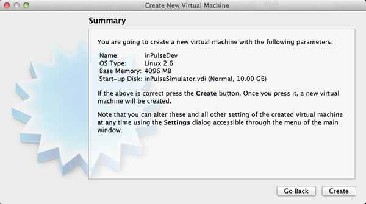
The summary should list the following:
- Name: Whatever name you gave the virtual machine
- OS Type: Linux 2.6
- Base Memory: Whatever you allocated -- mine says 4096MB
- Start-up Disk: inPulseSimulator.vdi (Normal, 10.00GB)
Click the Create button. Your virtual machine will be created, and you'll be returned to the window you saw when you launched VirtualBox, with one notable difference:
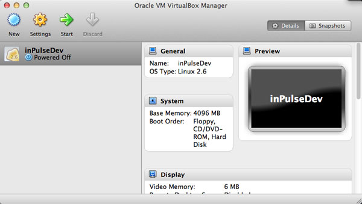
In the left pane of the window, you'll see the virtual machine you just created.
Start the Virtual Machine
It's time to start the virtual machine to confirm that it works. Click on the virtual machine to make sure it's selected, then click Start. The virtual machine will start booting up, just like a hardware machine would, only more quickly. Dismiss any dialog boxes that may appear during the startup process.
At some point, you should see the Ubuntu logo:
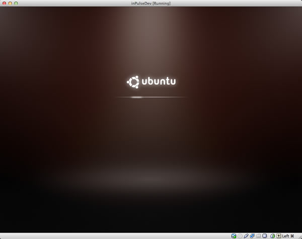
...and once the system has booted, you should see something like this:
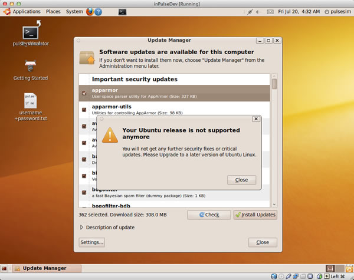
The virtual disk image contains an older, out-of-date version of Ubuntu that isn't supported anymore. Don't let this bother you; this version is perfectly fine for running the development tools and the inPulse simulator.
Dismiss the dialog box that says "Your Ubuntu release is not supported anymore" and close the Update Manager. You should now have a clear view of the desktop, which has four icons. One of the icons may be on top of another; rearrange the icons so that none of them overlap.
The desktop should now look something like this:
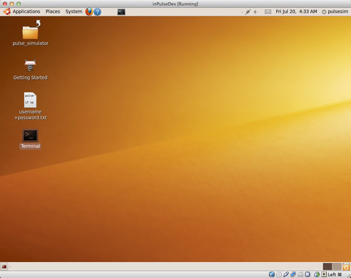
Congratulations! You've set up the virtual machine and are now ready to start writing inPulse apps.
Before we start developing apps, let me show you how to shut down the virtual machine.
Shut Down the Virtual Machine
Eventually, you'll want to shut down the virtual machine and work on something else (or get away from the computer entirely). You can do this by simply closing the virtual machine's window. The contents of the window will fade to grey and you'll be prompted with a dialog box:
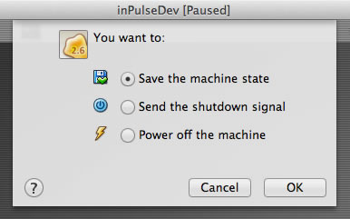
You can choose any of these options; pick the one you prefer and click OK to shut down the virtual machine. I prefer the Save the machine state option, which "freezes the virtual machine in time". When I start it again, restores the virtual machine to the exact same state as when I "froze it in time", running programs and all.
Exploring the Development Environment
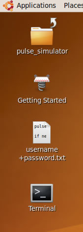
You'll find four icons on the desktop of the development environment:
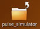pulse_simulator: A link to the directory containing the files you'll be using to develop apps, as well as some example code. The actual directory is located at /home/pulsesim/pulse_simulator. When you start developing inPulse apps, you work in this directory.
Getting Started: A link to inPulse's Getting Started with the inPulse Simulator web page. That topic is also covered in this tutorial.
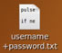username+password.txt: A text file containing the username and password of the pulsesim user, which you might need from time to time. The username and password are the same: pulsesim.
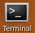Terminal: A link to the command-line Terminal program, which you'll use to compile and run your apps.
Let's take a closer look at the contents of pulse_simulator:
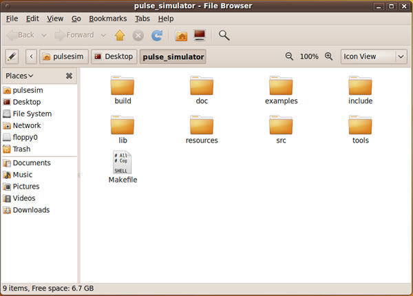
Of these contents, the ones that of the most important to you in the short term are:
- Makefile: Configures the make command, which you'll use to compile inPulse apps.
- src: The directory for source files. The code you write goes here.
- include: The directory for the header files that define inPulse's built-in functions and supported data types, which you'll need to
includein your source code. - build: The directory where your app, once compiled, goes.
- examples: A directory full of example code that you can use to learn more about inPulse programming.
Making Sure You Have the Latest Simulator
Before we do anything else, we need to make sure that the simulator is up to date. We'll do this by running the update_simulator script.
Open the Terminal program. You can do this many ways; one way is to double-click on the Terminal icon on the desktop.
Once Terminal is open, get a directory listing by entering the ls command. You should see the following:
pulsesim@ubuntu-desktop:~$ ls
Desktop examples.desktop Public update_simulator
Documents Music pulse_simulator Videos
Downloads Pictures Templates(Note: Any time we show you an example from a Terminal session, any commands you enter will be show in green.)
Enter ./update_simulator at the prompt. This will run a script that will download the latest versions of the simulator files into the pulse_simulator directory (your computer will have to be online). You should see the following:
pulsesim@ubuntu-desktop:~$ ./update_simulator
Downloading latest Pulse Simulator
--2012-07-20 15:47:23-- http://www.getinpulse.com/images/pulsesim/pulse_simulator.zip
Resolving www.getinpulse.com... 107.21.230.67
Connecting to www.getinpulse.com|107.21.230.67|:80... connected.
HTTP request sent, awaiting response... 200 OK
Length: 817048 (798K) [application/zip]
Saving to: `pulse_simulator.zip'
100%[======================================>] 817,048 744K/s in 1.1s
2012-07-20 15:47:24 (744 KB/s) - `pulse_simulator.zip' saved [817048/817048]
Archive: pulse_simulator.zip
replace pulse_simulator/Makefile? [y]es, [n]o, [A]ll, [N]one, [r]ename:The script will pause at a prompt where it asks replace pulse_simulator/Makefile? [y]es, [n]o, [A]ll, [N]one, [r]ename:. Enter A for all, since we want all the files to be updated. You'll see a large list of messages announcing files being decompressed and put into their proper directories. When the messages stop and you are returned to the command prompt, the update is complete.
Compiling and Running the Sample App
Now that we've got the development environment set up, let's see the simulator in action! inPulse have set things up so that there's already a program ready to be compiled and run in the simulator.
Change to the pulse_simulator directory by entering cd pulse_simulator at the command line. Then enter make to compile the code:
pulsesim@ubuntu-desktop:~$ cd pulse_simulator/
pulsesim@ubuntu-desktop:~/pulse_simulator$ make
gcc -o build/pulse_app -Iinclude -std=gnu99 -g -Wall lib/obj/main.o -Llib -D PULSE_SIMULATOR -lapp_common -lpulse_os -lpulse_protocol -lpulse_widgets -lgtk-x11-2.0 src/pulse_app.c
src/pulse_app.c: In function ‘main_app_handle_button_down’:
src/pulse_app.c:43: warning: implicit declaration of function ‘pulse_printf’
pulsesim@ubuntu-desktop:~/pulse_simulator$make uses the Makefile in this directory as instructions for compiling the source code, which is in the file pulse_app.c, which in turn is stored in the src directory. The resulting compiled file, pulse_app, is put into the build directory.
(Don't worry about the warning issued by the compiler about the implicit declaration of function ‘pulse_printf’; it's the result of a little hack that makes development for the simulator a little easier.)
We have a compiled app -- let's run it! Enter build/pulse_app at the prompt, and you should see this window appear:
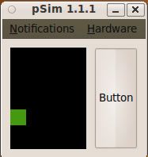
This app is called the Falling Box Demo. It draws a box that constantly falls from the top of the screen. When the box reaches the bottom of the screen, it's brought back to the top. Make a note of the size of the black area where the box is drawn: that's the area of the inPulse display, which is:
- 96 pixels wide
- 128 pixels high
The inPulse has a single button on its right side. In the simulator, it's represented by the big button labelled Button on the right side of the window.
Click Button. You'll see something like this:
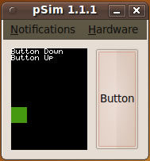
The Button Down text appeared when you pressed down on the button, and the Button Up text appeared when you released it. This suggests that there's an event for each action, which you can use in your own apps.
Look at Terminal. You'll see that it's displaying the following:
Button Down
Button Up
The function that prints text to the watch screen also prints to the terminal, which is handy for debugging.
The simulator also has a menu bar, with two menus labelled Notifications and Hardware. For now, we're more interested in the menu bar itself, because it's used to simulate the inPulse vibrate function:
- When vibrate is off, the menu bar is brown.
- When vibrate is on, the menu bar is blue.
Once you're done trying out the sample app, stop it. You can do this by either:
- Clicking on the simulator's "close window" button
- Typing control-C in Terminal